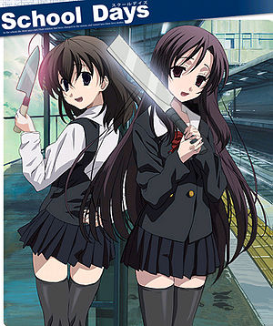

Freddy Krueger
 De: La Frikipedia, la enciclopedia extremadamente seria.
De: La Frikipedia, la enciclopedia extremadamente seria.
| De la serie monstruos mitológicos:
|
| Freddy Krueger
|
|
|
| Freddy Krueger torturando a Nancy como siempre
|
|
| Nombre Científico
|
Frederich Charles Krueger
|
| Hábitat
|
Sueños de masculinos/femeninos durmientes adolescentes
|
| Organización
|
MAL
|
| Actividad
|
Molestar mucho
|
| Dieta
|
Adolescentes
|
| Inteligencia
|
Indefinida, a veces es un cateto si cerebro y otras veces tiene un IQ de 4000.
|
| Aparición
|
En 8 pelis (obviusly), varios videos de Youtube y un DLC de Mortal Kombat
|
| Número aproximado
|
1
|
| Armadura
|
Su sueter navideño
|
| Ataques
|
Ataque de garra, Kamehameha, Hadouken...
|
| Moral
|
Media aunque no se baña
|
| Notas
|
Huele a hagua, sabe dulce (o eso dicen)
|
« ¡MIERDAAAAA! »
~ Freddy a la hora de limpiarse el culo después de cagar.
Primo hermano de Venon y ex-amigo del hombre del saco con cierta fobia a cortauñas y artefactos similares. Actualmente se dedica a meterse en los sueños humedos de adolescentes y se dedica a su... bueno, podriamos decir trabajo.
Historia
Freddy solía ejercer de jardinero frustrado, también practicando la cirugía experimental e improvisada a los críos para sacarse un sobresueldo (como un tal Nick Riviera de Los Simpsons).
Fue marginado por sus compañeros de clase por hortera dada su predilección por los jerseys navideños (fijense de que los lleva puestos en sus flashbacks) y por ser un hijo de 100 maniacos (literalmente, 100 maniacos de tiraron a su vieja, una monja). Para desquitarse mataba hamsters con martillo (mató a todo el elenco de Hamtaro). Después de morir calcinado por dos agentes de la TIA que acercaron por error un mechero a la fabrica donde trabajaba y operaba a niños (los dos agentes sobrevivieron con la ayuda de la Espada Don Patch), Freddy se convirtió en un ente malrollero que decidió, a partir de entonces, tocarle la moral en sueños a todo aquel que se le cruzara por delante.
La cosa iba así: Esperaba a que Picollo) y les tocaba los cojoncillos un rato, metiéndoles gilipolleces y chorradas en la mente, mostrándoles un enorme espectáculo de fuegos artificiales como nunca antes habían soñado, hasta que los mutilaba sin compasión con su garra de diseño Agatha Ruiz de la Prada mientras les contaba chistes malos, lo cual hacía que morirse fuera una putada aún mayor. La primera en ganarle fue una escuincla pecosa llamada Nancy que no esta buena pero hace fanservice del bueno! (todas las victimas chicas de Freddy hacen fanservice....porque para eso solo sirven). Despues de tratar de violarla en las 2 primeras entregas se la carga en la tercera porque en todas estaba igual de plana.
Curiosamente, a Freddy le mola mucho más destrozar y mutilar a jovencitos entre 16 y 25 años (aunque no desecha a los actores pardillos de 39 años que se hacen pasar por adolescentes universitarios). Esto es debido a sus traumas infantiles pues a quien le gusta que le canten a todo pulmon "Hijo de 100 maniacos!!". Como venganza, cuando Freddy cumplió los 7 años, cogió una sierra eléctrica de su buen amigo del colegio Cara de Cuero y... (la siguiente información ha sido censurada por la Asociación de Padres y Radioyentes y por las Autoridades Sanitarias). A causa de estos eventos acontecidos en su más tierna infancia y otros muchos (que paso de enumerar aquí), Freddy siempre prefiere un bonito cuerpo escultural de jovencita jamona al de una vieja machacada y borracha (aunque hizo una excepción con la madre de una tipa en la primera parte, ya que ésta, en especial, se lo merecía por la amenaza mundial que representaba). Freddy es también un poco cabroncete, por qué no admitirlo: Muchos comentan que, en el fondo, ataca a jovencitos y a adultos enfermos porque sigue siendo un marginado pringado, y no se atreve a pegarse con personas más grandes que él.
Freddy siempre fue un amante de las series como Bobobo y el bonito arte de lo absurdo, por lo que solía joder a sus victimas con sueños psicodélicos donde las rayadas más impensables podían tener lugar (Motocicletas vivientes, gusanos carnivoros de tres metros, un George W. Bush con diez neuronas en su cerebro...). Luego, como pago por la rayada de marras, se cargaba al tipo que estaba soñando de la peor y más absurda forma posible (su especialidad es una que tan solo Johnny Depp pudo pagar: Convertir la cama de su víctima en arenas movedizas, y, al cabo de un rato, transformar al sujeto en un bonito geiser color rojo pasión que pone perdida la habitación, para desesperación de sus padres y la señora de la limpieza). Aún así, Freddy prefiere utilizar su guante de diseño con cuatro preciosas cuchillas afiladas que le robó a McGyver. Con él perfora a sus victimas con sutileza y es perfecto como mondadientes para después de cenar carne humana (su plato preferido después de las lentejas).
Esta célebre costumbre del Sr. Krueger finalizó cuando en uno de sus sueños apareció un Wombat en celo: Desde entonces, es Freddy quién no duerme por miedo de volver a encontrárselos en sus sueños.
La última vez que se le vió fue en las inmediaciones del Campamento Lago Crystal, donde hablaba con Jason Vorhees sobre el cupo de muertos que tanto uno como el otro habían alcanzado en sus respectivos trabajos. Al parecer, algún comentario de Jason intimidó a Freddy (y eso que Jason no habla) y provocó que ambos empezaran a mutilarse mutuamente. A raiz de aquello, hoy en día ambos se encuentran en paradero desconocido. Luego como todos los psicopatas cuando acaban sus pelis, se involucró al anime creando School Days a su querida loca hija Kotonoha Katsura, para que siga la pelea contra Jason (Sekai era pariente de Jason). Se podria decir que es bisexual porque Jason y Nancy le mueven el tapete...
Actualmente se cree que esta en busca de goku Jason Voorhees por robarle su patito con el que se masturbaba guante, también por que descubrió que Jason fue uno de los 100 maníacos que se tiro a su puta mama pero, por desfortuna de Freddy, Jason actualmente esta muerto otra vez (no pregunten como fue, pero tiene que ver involucrado: Galletas, un payaso y un cuchillo), por lo tanto, Bob esponja Freddy debe encontrar el amuleto de su puta mama que servia para revivir personas y así revivir a Jason para tener su venganza, pobre Jason, Galletas, el payaso y el cuchillo, ¡fue horrible!
Vestimenta:
- Jersey navideño (parece pijama).
- Un sombrero (no es de vaquero, NO LO ES).
- Un guante con cuchillas (lo utiliza para matar adolescentes estupidos, escucharon bien gamberros).
- Unos pantalones negros (de nuevo, NO DE VAQUEROS, NO LO ES).
- 2
pene zapatos color negros (que bueno que esto es lo ultimo, NO DE VAQUEROS, NO LO ES).
A Freddy le gusta...
 Kotonoha (tetuda care´loca de la derecha) es su hija perdida en
School Days. Incluso pelea contra la hija de Jason! (izquierda)
- Dormir en sueños ajenos.
- Masacrar a adolescentes femeninos durmientes.
- Masacrar a adolescentes masculinos durmientes.
- Masacrar a masculinos durmientes adolescentes.
- Masacrársela con adolescencia a los masculinos durmientes.
- Masacrar a ¿transformistas? durmientes.
- Masculinizar a adolescentes masacrados durmientes.
- Sodomizar adolescentes femeninas durmientes.
- Sodomizar adolescentes masculinos durmientes.
- Sodomizar adolescentes transformistas durmientes.
- Adolecer de dormir en masacres masculinas.
- Dormir con adolescentes masacrados por masculinos.
- Hacer el tonto mientras mata.
- Hablar mientras mata.
- Masacrar a Nancy (la tia de las primeras pelis).
- Masacrar a Jason.
- Sodomizar a Nancy con su guante
- Matar a los putos que viven en tu casa.
- Cualquier cosa para él es buena si la hace mientras mata.
- Afilarse las garras (con los dientes).
- Los Beatles.
- Creerse que es el mejor en lo que hace (aunque no lo sea; Lobezno le supera por muy poco).
- Soñar con los angelitos (las Cheer Leaders del Instituto).
- The Offspring
- Vender sus camisetas a Emos.
- Rayar a gente.
- Rayar a más gente.
- Rayarse a sí mismo.
- Rayar discos (de los Manolos).
- Rayarlo todo.
- Meter barriga para impresionar a las jovencitas.
- Vestirse como un puto friki.
- Ir a convenciones de Otakus (para rajarlos, pero no puede hasta que éstos no se duerman, o sea, casi nunca).
- Criar hordas y hordas de Nabish.
- Vestirse con colores navideños en verano
- Jugar a Warhammer con el ejercito de Condes Vampiro
- Burlarse de quien mata.
- Cagarse en la madre de quien mata.
- Cogerse
a la madre el trasero de quien mata.
- Tener más de 8 peliculas y no morir.
- Tener la cara de toalla arrugada a pesar de que ya existen las cirugías plásticas.
- Matar.
- Matar mientras mata.
Frases Famosas
Como afirma Pablo Motos en el caso de los niños, hay muchas cosas muy bien dichas por Freddy que son muy interesantes y educativas para la juventud, y que desgraciádamente se olvidan con el tiempo, debido a la falta de ganas de parte de la televisión por volver a emitir sus películas. E aqui algunas de sus frases más interesantes:
- Bienvenido/a a mi pesadilla!!!!!!!!!!!!
- VOLEMOS......
- !Bienvenida a la hora estelar perra!
- MuAWWWWhahahahahahah!!!!!
- Estas desinflada......
- Tabla de planchar Nancy!! (confirmacion veridica)
- perdon niño!!!! no creo en los cuentos de hadas!!!
- Yo soy.........DIOS!!!!!!
- que tal un sueño humedo??????
- Es un Niñooooooooooooo!!!!!
- Dame tu oreja......
- SUPERÉ MI PROPIO RECORD!!! MuAWWWWhahahahahahah (Risa acojonante)!!!!!
- Sera mejor no conducir mientras duermes......
- MuAWWWWhahahahaihaihaihai (no es la misma risa acojonante de antes, atísbese el cambio de tonalidad)!!!!!
- Muere EMO!!!!!!!!!!
- Bon Appetit, perra!
- Perra!!!
- Bitch!!!
- Tu mamá cabron, tu mamá!!!
- Alguien te comió la lengua??
- Muere N00b !!!!
- ¬¬
- El hombre de tus sueños esta de vuelta!!!!!
- MuAWWWWhahahahahahah!!!!!
- Yo si encontre a Carmen Sandiego......
- SAYONARA idiota!!!!
- Oh, niños...
- Atacad, mis Nabish... ¡Atacad, atacad, atacad!
- ¿Por qué no te mueres...? (Ésta última a Jason Vorhees en medio de su batalla con él).
- ¿Por qué, Hulk, por qué...? (antes de ser aniquilado por Hulk Hogan).
- L331 h1n b3!! (Freddy jugando al counter)
- No hables con la boca llena, linda
- ¡Más rápido que un bastardo manìaco... Más poderoso que un depravado enfermo. Es... Sùperfreddy!
- Gritas igual que Bush siendo violado! ... ya deja de gritar coño! solo quiero descuartizarte!
- ¡Vienvenida a tu programa favorito... perra!
- ¡Ya te opero yooo!
- Kotonoha...anda y mata a la hija de Jason!
- Aguante Yanderes!
- HADOOOOOOOKEN!!!
Pesadillas
En realidad el y Nancy no se odiaban tanto...
Dado que las peliculas tan educativas de Freddy se dejaron de emitir aqui les traigo una reseña de los idiotas que mato.....
- Nancy Thompson: Su rival declarada en las primeras peli, pero harto de que este plana se la carga en la tercera peli el muy pedofilo
- Pija tonta de la cual no me acuerdo:Freddy estiro sus brazos y OH,AH la descuartizo lanzandola y "paseandola" por el techo (¿alquien recuerda Scary Movie???)
- Rod(su nombre real era baston):lo ahorcan(la muerte mas interezante que e visto ¬¬)
- Johnny Depp: Es arrastrado debajo de su cama y sale el mayor chorro de sangre jamas visto(¿como un pijo tan flaco puede llegar a almacenar tanta sangre?)
- Mama drogadicta:no se ve pero lo mas seguro es que sufrio una "pequeña" sobredosis
- Profesor maricon:metido en una ducha y luego Freddy aplica sadomasoquismo,fue tento placer que mato al idiota
- Bud Spencer:no viene al caso,pero me dio gusto mencionarle
- Pijo:arañado(otro OH, Y AH......)
- Dos tontos que no son importantes...
- EMO Punk Gotica:drogada y luego, violada(es que es demasiado desagradable para ver)
- Harry Petas, se creía muy chulito y osó disfrazarse vilmente de una copia fraudulenta y defectuosa del Doctor Extraño; He dicho suficiente.
- Otros seis mas que no vienen al caso...
- Rick: alumno de Ryu de street fighter. No se merecia morir... ¡es mas, él y algun tipo más son los unicos buenos personajes de toda la puta saga!
- Punk girl:transformada en una cucaracha (¬¬)
- El novio cachas de Nancy: Chulito piscinas que fue devorado por su propia moto y aplastado por un camionazo, haciendo las delicias de todos los frikis gafotas y pajilleros que en ese momento veían la película.
- Tipa jamona nadadora (Seguro que con ésta Freddy se lo pasó cantidubi... Si es que, admitámoslo, Freddy sabe elegir a sus víctimas).
- Friki dibujante de cómics: El segundo mejor personaje de toda la puta saga, después de Rick. El tío, principal aprendiz de Frank Miller y co-creador del superhéroe Puño de Hierro, podría haber llegado lejos en el mundo de los cómics de no ser por que Freddy se le apareció convertido en su alter ego, Super Freddy (mejor no pregunten), y lo machacó sin piedad alguna.
- Otros mas que no vienen al caso (se hace estupido esto no???)...
- Jack Bauer: Freddy no lo mata ya que para pelear con el se tarda 24 horas y al cabo de un rato Freddy volvio con Carmen Sandiego, su esposa.
- Jason Vorhees: Le hizo rememorar su infancia, lo cual fue un grave error...
- Hulk Hogan:es el ultimo sueño en donde se le ha visto.
- Sekai Saionji: ya que ella es hija de Jason (o pariente, lo que sea) corrio la misma suerte.
Sabias que....
- ¿¿Si te quedas viendo la imagen de inicio de articulo por 450 años Freddy te vuelve su ayudante??
- ¿¿Freddy es un sueño de Jack Bauer??
- ¿¿Freddy vive en estos momentos con su esposa Carmen Sandiego???
- ¿¿Su hija es la famosa yandere, Kotonoha Katsura???
- ¿¿En su infancia mató 323453874287 hamsters??
- ¿¿Freddy es primo del Payaso eso???
- ¿¿Freddy no puede limpiarse el culo cuando va al baño porque se corta el trasero con sus filosas navajas??
- ¿¿Freddy es mi primo-hermano???
- ¿¿Freddy es un usuario de la frikipedia???
- ¿¿Lobezno(por lo visto estaba celoso porque era poquisima la ventaja que habia entre el y Freddy) han matado a Freddy??
- ¿¿Freddy aun no ha muerto y rodara las siguientes 8 peliculas de su regreso??
- ¿¿Freddy le cargo tremenda putiza a fabiruchis??
- ¿¿Lo anterior no es verdad??
- ¿¿Pero lo quize poner??
- ¿¿Freddy Kruger estara en la pesadilla de la madre de IP anónima esta noche??
- ¿¿Tiene envidia del "Joven Manos de Tijera" porque las navajas de Freddy son guantes y no manos??
La Canción del Verano de Freddy Krueger:
1,2 Freddy viene por ti....
3,4 mejor cierra la puerta.....
5,6 ya me encabroné....
7,8 chúpate un bizcocho (por no decir otra cosa)
9,10 ya yo no se.....
11,12 caballito de bronce....
13,14 el código morse
15,16 por el culo te la hinco.... (a freddy le fastidió que el 5 no rimara en la canción).
17,18 chúpate a Pinocho....
19,20 ven conmigo, vente...
21,22 café para dos....
23,24 bésale el culo a un pato....
25,26 de quién es este pié....
27,28 chúpate un tocomocho....
29,30 me he fumao tres petas.... (y sigue la canción).
31,32 a tu mama se la cojio...
33,34 esto se a acabado...?
Con rima
1,2 Freddy viene a condón
3,4 ponle llave al cuarto
5,6 los gemidos no oiréis
7,8 metete un bizcocho
9,10 me lo mamareis
11,12 caballito de bronce
13,14 código Morse
15,16 al diablo os iréis
17,18 viólate a pinocho
19,20 hay que no me entre
21,22 hemorroides tengo yo
23,24 me meteré en un saco
25,26 nunca acabareis
27,28 me lo mama pinocho
29,30 mi culo en venta
31,32 un culo me enterró
33,34 esto ya acabó
Para más información, ver:
- Pesadilla en Elm Street (Película de superultrafrikiculto)
- Pesadilla en Elm Street 2 (Película de culto)
- Pesadilla en Elm Street 3: Dream Warriors (Película de archi-culto)
- Pesadilla en Elm Street 4: Dreams Master (Película de culto)
- Pesadilla en Elm Street 5: Dreams Child (Película de culto)
- Pesadilla final: La muerte de Freddy (Ésta, película de culto... tal vez no tanto)
- La nueva Pesadilla de Wes Craven (Película medio friki, medio de culto)
- School Days: Vean en anime a las hijas de Freddy y Jason matandose por el clon de Norman Bates!!
- Freddy vs Jason (Película friki)
- Evergreen Terrace (Clásico televisivo)
- Mortadelo y Filemón: ¡Pesadillaaaaa! (Obra maestra del cómic español)
Enlaces Externos
Autor(es):
- Krusher
- Fordus
- Static
- Frikiman
- Aque
- Ansem
- Epikurolibre
- JuanPaBJ16
- MarioDS
- Lightblackheart
Frikipedia 2005-2016, Licencia
GFDL 1.2 - Extraído por FrikiLeaks